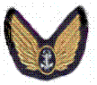

In Memory of
Chief
Petty Officer Airman WILLIAM LOVATT
L/FX. 82396, H.M.S. Theseus, Royal Navy
who died age 26
on 20 July 1947
Son of William and Susan Lovatt, of South Shields.
Remembered with honour
LEE-ON-SOLENT MEMORIAL

THESE OFFICERS AND MEN OF THE FLEET AIR ARM DIED IN THE SERVICE OF THEIR COUNTRY AND HAVE NO GRAVE BUT THE SEA.
CPO. William Lovatt was Lt Walker's Telegraphist Air Gunner (TAG) and was tragically killed in the same accident. His body was not recovered.